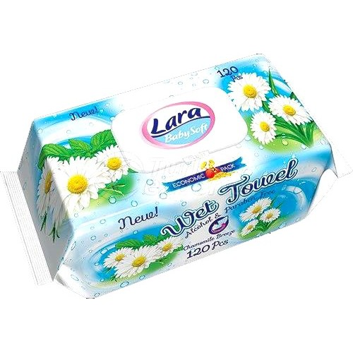
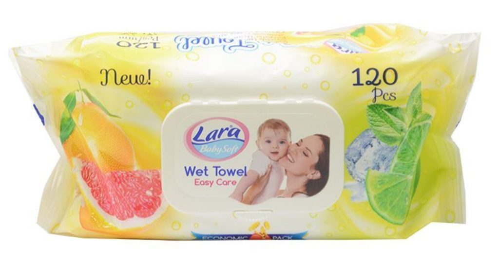

A wet wipe, also known as a wet towel or a moist towelette, or a baby wipe in specific circumstances, is a small moistened piece of plastic[1] or cloth that often comes folded and individually wrapped for convenience. Wet wipes are used for cleaning purposes like personal hygiene and household cleaning.

Invention American Arthur Julius is seen as the inventor of the wet wipes.[2] Julius worked in the cosmetics industry and in 1957, adjusted a soap portioning machine, putting it in a loft in Manhattan. Julius trademarked the name Wet-Nap in 1958, a name for the product that is still being used. After fine tuning his newfangled hand-cleaning aid together with a mechanic, he unveiled his invention at the 1960 National Restaurant Show in Chicago and in 1963 started selling Wet-Nap products to Colonel Sanders for use in his KFC restaurant.

Production A wet wipe dispenser Ninety percent of wet wipes on the market are produced from nonwoven fabrics made of polyester or polypropylene. The material is moistened with water or other liquids (e.g., isopropyl alcohol) depending on the applications. The material may be treated with softeners, lotions, or perfume to adjust the tactile and olfactory properties. Preservatives such as methylisothiazolinone are used to prevent bacterial or fungal growth in the package. The finished wet wipes are folded and put in pocket size package or a box dispenser.